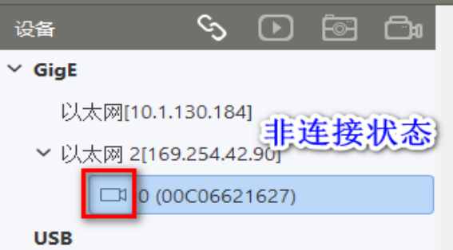
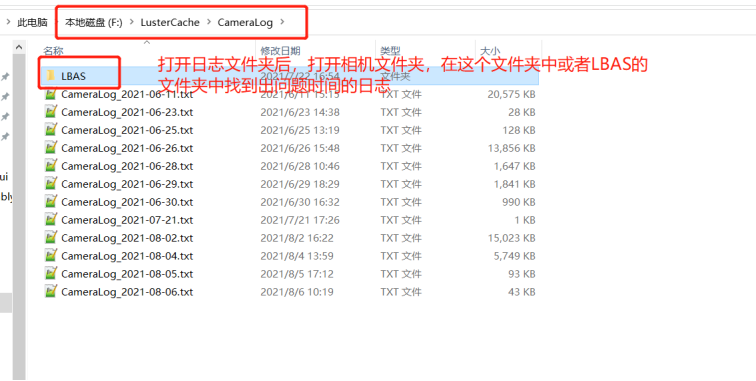
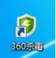
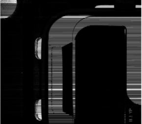

Hướng dẫn sử dụng LBAS
1. Hướng dẫn sử dụng
1.1 Cài đặt phần mềm và kết nối phần cứng
Cài đặt LBAS CAPTURE
Lưu ý
Đối với phiên bản VA6.2, các phiên bản trước VA6.2.153 sử dụng LBAS CAPTURE bản 3.1.190909; từ VA6.2.153 đến VA6.3.200.255 sử dụng bản 3.2.0.200922; các phiên bản sau VA6.3.200.255 sử dụng bản 3.3.1.210826. Nếu cài đặt không đúng những phiên bản này, cần xác nhận với bộ phận kiểm thử hoặc R&D xem có phải bản tùy chỉnh không. Nếu không phải, hãy gỡ và cài lại phiên bản phù hợp ở trên.
(1) Nhấp đúp vào gói cài đặt LBAS CAPTURE để bắt đầu cài đặt;
(2) Chuyển đến giao diện chọn ngôn ngữ;

(3) Nhấn Tiếp theo để đến giao diện chọn driver (GigE là cổng mạng, USB3 là cổng USB);
(4) Tiếp tục nhấn Tiếp theo đến giao diện chọn đường dẫn cài đặt, mặc định là ổ C;

(5) Nhấn Bắt đầu cài đặt để xem tiến trình;
(6) Trên Windows 7, quá trình cài đặt sẽ hiện hộp thoại CO., LTD network service;
(7) Đánh dấu "Luôn tin cậy phần mềm này", sau đó nhấn Cài đặt;

(8) Khi cài đặt xong, sẽ hiện trang hoàn tất;
Lưu ý
Trên Win7, nếu thấy hộp thoại yêu cầu chữ ký số như dưới đây, driver sẽ không cài được và có thể khiến không nhận cổng mạng. Cần cài thêm bản vá cho Win7 và cài lại driver. Ngoài ra cần kiểm tra kỹ xem driver lọc đã được cài đúng chưa.
Kết nối camera và thiết bị qua cổng mạng
Kết nối camera với máy tính công nghiệp: một đầu dây mạng cắm vào camera, đầu còn lại cắm vào cổng mạng của máy tính. Nếu máy không có module POE, cần cấp nguồn riêng cho camera (nối dây nguồn). Yêu cầu sử dụng dây mạng loại Cat 5e, mềm. Sau khi kết nối, đảm bảo đầu dây mạng ở camera cắm chắc, ốc vặn siết chặt. Nếu camera có đèn LED báo, đèn sẽ nhấp nháy xanh dương/lục. Đầu nối ở máy tính cũng phải chắc chắn, đèn mạng sáng.


1.2 Thiết lập IP mạng/kiểm tra driver/xác nhận môi trường hệ thống
Tắt tường lửa trước tiên

Thiết lập IP mạng trên Windows 10
(1) Nhấp vào biểu tượng mạng ở góc dưới phải;

(2) Chọn "Cài đặt mạng và Internet" ở bên phải;
(3) Trong giao diện cài đặt, chọn Ethernet, sau đó "Thay đổi tùy chọn adapter";

(4) Tìm card mạng kết nối với camera, nhấp đúp hoặc nhấp chuột phải vào "Thuộc tính";

(5) Nhấp đúp vào "Internet Protocol Version 4 (TCP/IPv4)";

(6) Thiết lập IP tĩnh theo quy định, gồm địa chỉ IP và subnet mask;
Thiết lập IP mạng trên Windows 7
(1) Nhấp vào biểu tượng mạng ở góc phải, chọn “Mở trung tâm mạng và chia sẻ”;

(2) Trong giao diện trung tâm mạng, chọn “Thay đổi cài đặt adapter” ở bên trái;

(3) Trong cửa sổ kết nối mạng, nhấp vào card mạng cần thiết lập;

(4) Nhấp đúp vào "Internet Protocol Version 4 (TCP/IPv4)";

(5) Chọn "Sử dụng địa chỉ IP sau", sau đó điền địa chỉ IP và subnet mask, nhấn "OK";
Thiết lập các tham số mạng nâng cao sau khi đặt IP
(1) Nhấp vào “Cấu hình” để vào giao diện thuộc tính;
(2) Trong mục "Nâng cao", thiết lập Receive Buffers ở mức tối đa (thường là 2048), Jumbo Packet là 9k hoặc lớn nhất, và Interrupt Moderation Rate là cực trị;

(3) Trong mục "Quản lý năng lượng", bỏ chọn “Cho phép máy tính tắt thiết bị để tiết kiệm điện”
Kiểm tra driver lọc (Filter Driver)
(1) Kiểm tra xem "LBAS GigeVision Image Filter Driver" có bị thiếu hay bị trùng. Nếu có vấn đề cần cài lại driver. Ngoài ra, nếu xuất hiện các Filter Driver khác (ví dụ của Teledyne Dalsa hoặc HIK), cần gỡ bỏ các driver đó;

(2) Mở thư mục cài đặt LBAS CAPTURE, tìm công cụ cài đặt driver;

(3) Nhấp đôi vào “LBAS_Driver”. Nếu hiện “chưa cài đặt”, nhấn “Cài đặt”;
Lưu ý
Phiên bản 3.2.2.200922 có thể không kiểm tra chính xác trạng thái driver;
(4) Với phiên bản LBAS CAPTURE 3.2, cần kiểm tra log file;
Tìm trong thư mục: `C:\Windows\Temp\LbasSdkLog\` các file `SDK_00.log` và `SDK_01.log`. Nếu không có, kiểm tra trong thư mục cài đặt VISIONAssembly, hoặc tìm toàn hệ thống;
Kiểm tra xem có thông tin như hình bên dưới không:

Nếu xuất hiện “Driver mode start” thì cài đặt thành công. Nếu có “Driver mode failed” hoặc từ “socket” thì là cài đặt thất bại;
Lưu ý
Nếu có phần mềm diệt virus, cần thêm LBAS CAPTURE vào danh sách trắng để tránh bị chặn khiến driver lọc không hoạt động.
Có thể sử dụng công cụ hỗ trợ kiểm tra lỗi LBAS từ cloud drive.

Xác nhận môi trường hệ thống
(1) Trong trạng thái bình thường, card mạng sẽ nhận diện được thiết bị; nếu xảy ra lỗi, card mạng sẽ không nhận diện được camera, như hình dưới:

Nếu card mạng không nhận thiết bị hoặc bị vô hiệu hóa (hiển thị màu xám), cần kiểm tra tại “Máy tính của tôi — Quản lý — Trình quản lý thiết bị” xem driver của card mạng có biểu tượng cảnh báo màu vàng không. Nếu có, cần cài lại driver. Nếu không có, thử tắt rồi bật lại card mạng để khôi phục trạng thái. Nếu sau các bước này vẫn không nhận được thiết bị, cần thay máy tính công nghiệp (IPC).
(2) Qua kiểm tra tại phòng lab, các card mạng Realtek có hiệu suất kém, dễ gây mất gói dữ liệu. Khuyến nghị sử dụng card mạng Intel như I210 hoặc I350. Ngoài ra, nếu driver của card mạng quá cũ cũng ảnh hưởng đến việc thu nhận ảnh từ camera. Khuyến nghị cập nhật driver (sử dụng phần mềm như Driver Booster), nên dùng bản driver phát hành sau năm 2015. Để kiểm tra loại card mạng và driver, nhấp chuột phải vào card — Thuộc tính — Cấu hình — Trình điều khiển như hình dưới:
1.3 Thiết lập thông số cốt lõi
Giải thích các tham số cơ bản của camera
FPS (Tốc độ khung hình): Số ảnh chụp được mỗi giây.
Thời gian phơi sáng (Exposure): Tăng độ sáng hình ảnh. Trong phạm vi nhất định, giá trị càng lớn thì ảnh càng sáng. Tuy nhiên, phơi sáng quá cao sẽ làm giảm FPS (khuyến nghị dưới 80ms).
Gain (Độ khuếch đại): Cũng để tăng độ sáng, nhưng nếu quá lớn sẽ tăng cả tín hiệu và nhiễu.
Gamma: Điều chỉnh độ tương phản hình ảnh (nên để mặc định nếu không cần thiết).
Định dạng pixel: Phần mềm hiện hỗ trợ Mono8 (đen trắng), RGB (màu), định dạng Bayer (màu).
Chế độ chụp: Gồm chế độ liên tục (Non-trigger) và chế độ kích hoạt (Trigger), trong trigger lại chia thành kích hoạt mềm và cứng. Kích hoạt mềm là khi phần mềm (VA) gửi lệnh mới chụp ảnh; kích hoạt cứng là khi có tín hiệu mức cao/thấp (thường do PLC gửi). Trong giai đoạn kiểm tra hình ảnh, thường dùng chế độ liên tục; khi vào sản xuất chính thức thì dùng trigger. Hình minh họa như sau:
Thiết lập tham số SCPD
Tham số SCPD là độ trễ giữa các gói ảnh. Mục đích là giảm lưu lượng truyền tải trong cùng một đơn vị thời gian, từ đó giảm khả năng mất gói và tránh hiện tượng ảnh bị sọc đen. Mỗi hãng mô tả và đặt SCPD theo cách khác nhau.
Lưu ý
Thiết lập SCPD quá cao sẽ làm giảm FPS. Mặc định nên để 400. Trong phần mềm VA, mặc định đặt là 4000.
(1) Nếu phần mềm VA bạn dùng không phải bản chuẩn (baseline, như V5.5 hoặc V6.2), cần chỉnh SCPD trong SDK của camera.
Đối với camera LBAS:
Bước 1: Chọn thiết bị camera, nhấp "Kết nối":
Bước 2: Tìm mục "Transport Layer Control" bên dưới, chỉnh SCPD:


Bước 3: Vào mục "User Set Control" để lưu thiết lập, chọn đúng kênh rồi nhấn lưu:

(2) Nếu dùng phần mềm VA phiên bản baseline như V5.5 hoặc V6.2, SCPD đã được đặt sẵn là 4000. Giá trị lớn này sẽ làm giảm tốc độ khung hình, thời gian chụp ảnh sẽ dài hơn. Nếu nhà máy yêu cầu CT nghiêm ngặt, có thể sửa lại trong file cấu hình phần mềm như hình:

Với phiên bản sau V6.3, SCPD được thiết lập trong phần “Quản lý camera” của phần mềm VA:
Thiết lập bộ đệm kích hoạt cứng của camera
Lưu ý
Nếu ứng dụng camera không phải dạng chụp khi đang chuyển động (fly-shooting), có thể bỏ qua phần thiết lập này.
Trong một số ứng dụng dạng "fly-shooting", camera sẽ thực hiện nhiều lần chụp ảnh trong một quy trình và chỉ xử lý sau khi hoàn thành toàn bộ. Khi đó, cần thiết lập bộ đệm kích hoạt cứng (trigger buffer) bằng với số lần chụp, nếu không sẽ dẫn đến hiện tượng ảnh bị lệch hoặc ảnh đen. Thiết lập như sau:

Với các phiên bản VA từ 6.3 trở đi, có thể thiết lập trực tiếp trong phần quản lý camera của VA:

1.4 Cân bằng trắng của camera màu
Camera màu hỗ trợ tính năng cân bằng trắng, giúp hiệu chỉnh màu sắc phù hợp với điều kiện ánh sáng khác nhau. Bằng cách điều chỉnh tỷ lệ các thành phần R, G, B, đảm bảo khu vực màu trắng hiển thị đúng là màu trắng dưới nhiều nhiệt độ màu khác nhau. Tỷ lệ lý tưởng của R:G:B là 1:1:1. Có 3 chế độ cân bằng trắng: thủ công, tự động một lần và tự động liên tục. Chi tiết như bảng dưới đây:
| Chế độ cân bằng trắng |
Tham số tương ứng |
Giá trị tùy chọn |
Nguyên lý hoạt động |
| Thủ công |
Analog Control > Balance White Auto |
Off |
Người dùng điều chỉnh các kênh R/G/B thông qua Balance RatioSelector và Balance Ratio, giá trị từ 1~4095, 1024 tương đương hệ số 1.0 |
| Tự động một lần |
Once |
Thực hiện cân bằng trắng một lần theo điều kiện hiện tại rồi dừng lại |
|
| Tự động liên tục |
Continuous |
Liên tục điều chỉnh theo môi trường hiện tại |
|
Nếu màu sắc trong ảnh khác biệt nhiều so với thực tế, có thể tiến hành hiệu chỉnh cân bằng trắng trong phần mềm LBAS Capture. Thực hiện như sau:
- Chuẩn bị một tờ giấy trắng, đặt trong vùng nhìn của camera sao cho chiếm trọn khung hình.
- Thiết lập phơi sáng và độ khuếch đại, khuyến nghị đặt độ sáng trong khoảng 120 ~ 160.
- Giá trị mặc định của Balance White Auto là “Continuous” để thực hiện cân bằng trắng tự động.

Nếu sau khi tự động cân bằng mà vẫn không đạt màu sắc mong muốn, có thể chuyển sang cân bằng trắng thủ công:
- Chuyển Balance White Auto sang “Off” để bật chế độ thủ công.
- Chọn một kênh R/G/B có giá trị là 1024 làm chuẩn, sau đó điều chỉnh các kênh còn lại sao cho cả 3 kênh có giá trị tương đồng. Khi hình ảnh gần sát với màu thực tế, việc hiệu chỉnh hoàn tất.
Lưu ý
Sau khi hiệu chỉnh xong, nên lưu vào nhóm tham số người dùng để tránh mất sau khi camera mất điện. Nếu điều kiện ánh sáng thay đổi, cần hiệu chỉnh lại cân bằng trắng.
1.5 Thiết lập IP và xác nhận firmware của camera
(1) Trên desktop, tìm biểu tượng phần mềm LBAS và nhấp đúp để mở.

Hoặc vào menu Start, tìm thư mục “LBAS” và chọn “LBAS CAPTURE” để mở.
(2) Nhấp vào mũi tên bên trái mục “GigE” để mở danh sách card mạng và camera. Nhấp tiếp vào mũi tên bên trái card mạng để tìm camera cần thiết lập. Nếu chưa thấy camera, hãy nhấn nút refresh nhiều lần cho đến khi xuất hiện. Sau đó chọn camera và vào menu “Công cụ” → “Công cụ thiết lập IP”.

(3) Trong cửa sổ thiết lập IP, chọn “IP tĩnh” (Static IP), sau đó nhập IP, subnet mask và gateway. Đảm bảo IP nằm cùng dải mạng với card mạng đã thiết lập. Sau đó nhấn “Lưu” ở góc dưới và đóng cửa sổ.

Lưu ý
Không nên nhấp đúp vào camera để đổi IP trực tiếp như hình dưới – đây không phải là thao tác chuẩn.

Kiểm tra và nâng cấp SDK & firmware
Nhấn đúp vào biểu tượng LBAS trên desktop, chọn “Trợ giúp —- Giới thiệu”, trong hộp thoại hiện ra sẽ thấy thông tin phiên bản SDK.

Lưu ý
Trình cài đặt driver LBAS có tên là LBAS CAPTURE_NEU_3.1_190909.exe, tương ứng với phiên bản “V3.1 build20190820”.
Nếu SDK không phải bản mới nhất, cần nâng cấp. Trước tiên vào Control Panel gỡ cài đặt bản cũ, sau đó khởi động lại máy rồi cài bản mới. (Để đảm bảo gỡ sạch, nên khởi động lại sau khi gỡ). Nếu không gỡ được, hãy thử cài đè bản hiện tại rồi gỡ lại.

Kiểm tra và nâng cấp firmware
Nhấn đúp biểu tượng LBAS trên desktop, nhấn nút  để đảm bảo camera đang ở trạng thái chưa kết nối:
để đảm bảo camera đang ở trạng thái chưa kết nối:


Vào “Công cụ —– Công cụ nâng cấp firmware”, kiểm tra phiên bản firmware như hình:

Nếu cần nâng cấp firmware, tải firmware tương ứng và thực hiện nâng cấp như hướng dẫn sau:
Thông tin firmware mới nhất cho từng model LBAS có trong thư mục cloud như sau:

Bộ cài SDK và firmware mới nhất nằm trong thư mục cloud, có thể tải trực tiếp hoặc liên hệ phòng kiểm tra để lấy.

Lưu ý
Sau khi nâng cấp firmware, cần khởi động lại camera.
1.6 Bật và xem log camera
Vị trí log camera

(1) C:\Users\TênNgườiDùng\LBAS\LBASLog
(2) Thư mục cài đặt phần mềm VA;
(3) Nếu có thiết lập lại đường dẫn log thì kiểm tra trong thư mục đã chỉ định:

(4) Như ví dụ dưới:

Lưu ý
Tên file log có thể là SDK_00.log và SDK_01.log
1.7 Lưu ý khi dùng camera USB3
Không thể kết nối camera
Sau khi cài LBAS CAPTURE mà cả LBAS và VA đều không nhận camera, hoặc bị rớt gói nặng, hãy kiểm tra xem đã cài đúng driver USB3 mới nhất chưa.
Camera bị rớt gói
Nếu đã kiểm tra cơ bản bằng LBAS CAPTURE mà vẫn gặp rớt gói hoặc mất kết nối, kiểm tra lại độ dài và chất lượng cáp USB. Cáp USB3 lý thuyết dài tối đa 5m, thực tế ổn định chỉ khoảng 3m. Nếu cần kết nối xa, khuyên dùng cáp quang USB3.
Thời gian chụp tăng khi dùng Gamma trong chế độ độc lập
Camera USB3 khi dùng Gamma mất khoảng 150ms mỗi lần, do đó khi sử dụng cấu hình độc lập không nên thay đổi thông số Gamma.
1.8 Lưu ý khi dùng camera mạng 10G
Model hỗ trợ: LBAS-10G250-40M/C và LBAS-10G650-15M/C
Card mạng 10G: PCIE-10GIGE-X1 (1 cổng)
Link tải driver: AnyShare://IVS23 3C产品部/3C 产品管理部/采集卡
Yêu cầu phần mềm LBAS CAPTURE phiên bản 3.2 trở lên
Việc cài driver, đấu nối phần cứng và cài đặt thông số giống các model khác. Xem thêm tại Hướng dẫn sử dụng LBAS.
Kiểm tra tốc độ kết nối
Vào Control Panel → Network and Sharing Center → chọn card mạng:

Nhấn đúp card mạng để kiểm tra tốc độ kết nối có đạt 10.0 Gbps không:
Lưu ý
Nếu không đạt 10 Gbps, thử cắm lại dây mạng hoặc đổi sang khe cắm PCIE khác (yêu cầu PCIE 2.0 trở lên, một số máy cũ chỉ hỗ trợ PCIE 1.0).
Nếu bị lỗi chữ ký số trên Win7, cần cài bản vá: Windows6.1-KB3033929-x64.msu; nếu là Win10, cần tạm thời tắt kiểm tra chữ ký bằng cách: khởi động lại máy → giữ phím Shift → chọn tắt xác minh chữ ký số.
1.9 Cài đặt bản vá lỗi chữ ký số trên Win7
1.10 Thêm LBAS vào danh sách trắng của 360 Antivirus
Nếu máy tính có cài phần mềm diệt virus (ví dụ 360), có thể nó sẽ chặn driver LBAS. Sau đây là hướng dẫn thêm driver LBAS vào danh sách trắng:
1. Mở phần mềm 360 Antivirus;

2. Nhấn vào nút “Cài đặt” ở góc phải trên cùng;

3. Vào mục “Danh sách trắng tập tin”, nhấn nút “Thêm tập tin”;
4. Chọn tập tin driver LBAS để thêm;
5. Đánh dấu chọn “Không vô hiệu nếu tập tin thay đổi”, rồi nhấn “Xác nhận”;
6. Bây giờ file đã nằm trong danh sách trắng, 360 sẽ không chặn hoặc xóa nó nữa;

2. Câu hỏi thường gặp (FAQ)
Trong quá trình sử dụng camera, có thể gặp nhiều vấn đề khác nhau. Dưới đây là tổng hợp một số tình huống chính, bao gồm mô tả hiện tượng, nguyên nhân, cách kiểm tra và hướng xử lý.
2.1 Không tìm thấy camera
Q:
Trong quá trình sử dụng VA, không thể tìm thấy camera, bấm nút làm mới (refresh) cũng không có tác dụng. Phải xử lý thế nào?
A:
Trường hợp VA không nhận diện được camera chủ yếu liên quan đến việc camera bị ẩn hoặc thiết lập IP sai. Dưới đây là các tình huống cụ thể:
1. Camera bị chuyển sang IP tự động
Hiện tượng:
Camera bị mất kết nối mạng hoặc nguồn điện trong khi đang sử dụng, khi kết nối lại thì phần mềm không thể nhận diện được camera. Mở phần mềm SDK tương ứng (như LBAS CAPTURE) để kiểm tra trạng thái của camera sẽ thấy một trong hai trạng thái sau: biểu tượng dấu chấm than vàng → IP camera không đúng; dấu X đỏ → camera đang bị chiếm dụng.
Cách xử lý:
Khi cài IP cho camera, cần đảm bảo sử dụng đúng phần mềm SDK tương thích với camera; nếu không tương thích, cần cài lại SDK phù hợp.
Kiểm tra xem card mạng đang dùng có thiết lập IP động hay không. Nếu là IP động, hãy làm theo mục Cài đặt IP card mạng đã nêu phía trên để chuyển sang IP tĩnh. Sau đó mở SDK camera để kiểm tra xem IP camera có bị chuyển sang dải 169 hay không, nếu có thì làm theo mục Cài đặt IP camera để gán lại IP tĩnh cho camera.
Nếu trạng thái camera hiện dấu chấm than vàng, cần thiết lập lại IP bằng cách làm theo hướng dẫn ở mục Cài đặt IP camera.
2. Không thể thiết lập IP cho camera
Hiện tượng:
Trong phần mềm “LBAS CAPTURE_NEU_3.1_190909.exe”, khi vào “Công cụ” -> “Công cụ thiết lập IP” thì báo lỗi thiếu thư viện:


Cách xử lý:
3. SDK nhận diện được camera nhưng VA không nhận
Hiện tượng:
Camera có trạng thái bình thường trong SDK (ảnh trái), nhưng không hiện trong VA.
Camera bị chiếm dụng (ảnh phải), VA không thể kết nối, trạng thái hiển thị là ngoại tuyến:
Cách xử lý:
Nếu trạng thái camera bình thường, kiểm tra file cấu hình để xem camera có bị vô hiệu hóa hay không:
Chuột phải vào biểu tượng VA → chọn “Mở vị trí tệp”, mở thư mục như hình trên, sau đó mở thư mục “System” và tìm file “CamConfig.gcfg”:
Mở file bằng Notepad, kiểm tra xem camera có bị vô hiệu hóa không (dòng có “CameraSN”), nếu có thì xóa dòng đó và lưu lại, rồi khởi động lại VA.
Kiểm tra xem module của camera có bị xóa không, ví dụ với camera LBAS là file GvCamLBase12u.dll.
Chuột phải vào biểu tượng VA → chọn “Mở vị trí tệp”, rồi mở thư mục “Plugins” như hình:
Kiểm tra xem module tương ứng có tồn tại không:


Kiểm tra phiên bản SDK yêu cầu của phần mềm và phiên bản đang cài có khớp nhau không.
Nếu là trường hợp camera bị chiếm dụng, hãy ngắt nguồn và khởi động lại camera.
Nếu trong file TraceLog*.txt (nằm trong thư mục LusterCache, file mới nhất như TraceLog1.txt) có ghi lỗi không load được GvCamLBase12u.dll (như hình dưới), hãy cài bản vá “SDK识别相机，VA不识别相机.zip” (tìm trong thư mục chia sẻ nội bộ):

4. SDK không nhận được camera
Hiện tượng:
Không thấy card mạng hoặc camera như hình:
Đèn báo camera không bình thường: trạng thái chuẩn là đèn xanh/lam nhấp nháy, đèn mạng sáng. Nếu thấy đèn đỏ nhấp nháy, đèn mạng tắt là bất thường:

Cách xử lý:
Kiểm tra kết nối mạng. Nếu driver cài sai có thể gây lỗi card mạng. Hãy cài bản vá chữ ký số.
Kiểm tra dây mạng, thử thay dây mới.
Thử camera ở máy tính khác để kiểm tra thiết bị có lỗi không.
Kiểm tra nguồn POE của card mạng. Nếu nghi ngờ hỏng, hãy thay card mạng để thử lại.
Thay camera và máy công nghiệp khác để loại trừ lỗi phần cứng.
Chú ý
Nếu là camera USB3, sau khi đã kiểm tra các bước trên nhưng vẫn chưa khắc phục được, hãy xem thêm mục 2.1.6 Các lưu ý khi sử dụng camera USB3.
2.2 Đã tìm thấy camera nhưng không thể kết nối
Q:
Sau khi mở phần mềm VA, có thể tìm thấy camera bằng cách làm mới, nhưng không thể kết nối và sử dụng được. Phải xử lý thế nào?
A:
Trường hợp này thường do camera mới chưa được tương thích, camera đang bị chiếm dụng, hoặc dây kết nối có vấn đề. Dưới đây là các tình huống cụ thể:
Không có trong danh sách phần cứng
Nếu là camera mới, cần gửi toàn bộ camera, card thu thập hình ảnh, dây kết nối và dây nguồn về bộ phận R&D để làm tương thích.
Camera bị chiếm dụng
Kiểm tra xem camera có đang bị sử dụng trong LBAS CAPTURE, các phần mềm VA khác đang mở hoặc tiến trình chưa thoát hẳn hay không. Nếu có, hãy đóng phần mềm đang dùng trước, sau đó khởi động lại VA và thử làm mới lại danh sách camera.
Phần mềm thoát đột ngột gây chiếm dụng camera
Khởi động lại camera rồi kết nối lại là được.
Vấn đề dây kết nối
Kiểm tra xem dây mạng có bị lỗi không, dây USB3 có quá dài không, v.v.
2.3 Ảnh có sọc tối hoặc nhiễu
Q：
Hình ảnh thu được bằng phần mềm VA xuất hiện sọc đen, hình bị lệch, hoặc là ảnh hiện tại bị trộn với ảnh trước đó. Cách xử lý?

A:
Lỗi do mất gói dữ liệu trong quá trình truyền khiến hình ảnh xuất hiện sọc đen, nhiễu, ghép lỗi, v.v.
Các bước kiểm tra và xử lý:
- Kiểm tra model card mạng và driver có đáp ứng yêu cầu không, thao tác theo mục 1.2.
- Kiểm tra và thiết lập đúng các tham số như jumbo frame, buffer gửi/nhận, tốc độ ngắt, theo hướng dẫn mục 1.2.
- Nếu là camera LBAS, kiểm tra SDK (LBAS CAPTURE) và firmware camera có đúng phiên bản yêu cầu không. Tham khảo 1.2.
- Nếu vẫn mất gói, điều chỉnh tham số SCPD (khoảng trễ giữa các gói ảnh). Lưu ý: giảm SCPD sẽ làm giảm FPS. Tham khảo 1.3.
- Thêm chức năng tự động thu lại gói mất (re-capture). Phiên bản V5.5 và V6.2 đã hỗ trợ; nếu dùng bản khác, liên hệ bộ phận kiểm thử để thêm chức năng này.
- Nếu sau tất cả vẫn mất gói nghiêm trọng, có thể thay camera để loại trừ nguyên nhân do phần cứng.
Giải thích
Vấn đề mất gói có thể do nhiều yếu tố từ phần cứng, phần mềm đến hệ thống. Hiện chưa thể loại bỏ hoàn toàn mất gói, nhưng có thể giảm thiểu để không ảnh hưởng đến xử lý hình ảnh.
2.4 Hình ảnh bị méo, biến dạng
Q:
Khi chụp ảnh bằng VA, thấy vật thể trong ảnh bị méo, lệch, hoặc nhòe. Nguyên nhân và cách khắc phục?

A:
Thường gặp với camera rolling (như LBAS-GE60-17, GE100-11M, GE120-10, GE200-5M, v.v.). Trong quá trình chụp, camera và vật thể có chuyển động tương đối, gây ra hiện tượng biến dạng. Cần:
- Thêm độ trễ trước khi chụp;
- Kiểm tra lại quy trình của phần mềm và thiết bị cơ khí để loại bỏ chuyển động khi chụp.
2.5 Hình mờ khi chụp bay (flying capture)
Q:
Khi dùng trigger cứng để chụp bay, ảnh thu được bị mờ. Nguyên nhân và cách khắc phục?
A:
Chụp bay yêu cầu dùng camera Global Shutter. Nếu thời gian phơi sáng quá lâu khi có chuyển động, sẽ gây ra hiện tượng bóng kép hoặc mờ. Công thức tính thời gian phơi sáng tối đa:
Thời gian phơi sáng ≤ Độ phân giải quang học (độ phân giải vật lý / hệ số pixel) / tốc độ di chuyển
Chú ý
Chụp bay cần sử dụng nguồn sáng nhấp nháy công suất lớn, ống kính khẩu độ lớn, camera có kích thước pixel lớn.
2.6 Hình ảnh không khớp – lỗi kích hoạt sai
Q:
Khi dùng trigger cứng, có thể xảy ra tình huống tín hiệu kích hoạt sai khiến camera chụp sai vật thể. Làm sao để tránh?
A:
Khi trigger cứng, chỉ cần xung 3V trở lên là camera đã có thể chụp ảnh và lưu vào bộ đệm. Nếu phần cơ học gửi sai tín hiệu, sẽ chụp thừa ảnh hoặc sai thứ tự ảnh. Giải pháp:
- Đảm bảo tín hiệu từ thiết bị cơ được kiểm soát chính xác (xung điện không bị nhiễu, tránh dùng relay hoặc nguồn switching gây xung gai);
- Chuyển chế độ trigger về soft trigger khi không cần chụp bằng phần cứng;
- Bật chế độ chống nhiễu trigger trong camera để lọc tín hiệu sai.

2.7 Hình ảnh quá sáng hoặc quá tối
Q:
Khi chụp ảnh, độ sáng không đồng đều giữa các lần chụp, hoặc ảnh chụp đơn không giống ảnh chụp liên tục. Nguyên nhân?
A：
- Đảm bảo đồng bộ giữa camera và nguồn sáng (đặc biệt là khi dùng đèn nhấp nháy);
- Tránh thay đổi thường xuyên các thông số như Exposure, Gain, Gamma bằng các profile riêng biệt vì có thể không được áp dụng kịp thời. Nên sử dụng mặc định hoặc tối giản các cài đặt riêng biệt;
- Nếu lỗi do firmware, hãy nâng cấp camera lên phiên bản firmware mới nhất;
- Với camera Rolling dùng chế độ GlobalReset, ảnh sẽ có độ sáng khác biệt so với ảnh ở chế độ chụp liên tục – đây là đặc điểm của thiết bị.
2.8 Vấn đề khi sử dụng camera màu
Q:
Dùng chế độ màu nhưng không đạt được tốc độ khung hình mong muốn.
A:
Phần mềm hỗ trợ các định dạng màu RGB8Packet và Bayer8. Nếu dùng RGB8Packet sẽ chậm hơn đáng kể. Nên dùng Bayer8 để tối ưu tốc độ.
Q:
Màu sắc từ camera màu không chính xác.
A:
- Chưa cân bằng trắng tốt, tham khảo mục 1.3 – Cân bằng trắng cho camera màu;
- Firmware không đúng, có hai bản firmware: 1 bản cho độ nét cao, 1 bản cho tái tạo màu tốt hơn;
- Định dạng pixel ảnh hưởng: RGB8 cho màu đậm hơn nhưng giảm tốc độ khung hình.
Q:
Sau khi thiết lập định dạng điểm ảnh (pixel format) cho camera, khi tải lại project thì định dạng điểm ảnh lại bị thay đổi và không thể chỉnh sửa được:
A:
Trừ phiên bản nền 6.2, các phiên bản khác vẫn chưa mở quyền chỉnh định dạng điểm ảnh của camera LBAS trong phần mềm. Vì project có lưu định dạng của camera, nên thiết lập thủ công trên camera sẽ bị project ghi đè và không thể sửa lại được. Cách xử lý là chỉnh sửa trực tiếp file project bằng Notepad++ (Lưu ý: không nên dùng định dạng text thường để mở, dễ khiến project không thể sử dụng). Sửa định dạng theo hình dưới để dùng định dạng màu.
Định dạng Bayer gồm 4 loại. Cần mở driver camera để kiểm tra định dạng nào được hỗ trợ, rồi sửa theo bảng dưới. Hình ảnh dưới là ví dụ sửa về định dạng BayerRG8:
Bảng đối chiếu định dạng Bayer và giá trị ePixelFormat trong project:
| Định dạng Bayer |
Giá trị ePixelFormat trong project |
| BayerRG8 |
3 |
| BayerGR8 |
4 |
| BayerGB8 |
5 |
| BayerBG8 |
6 |
2.9 Thời gian thu ảnh lâu / không thu được ảnh
Q：
Khi sử dụng camera để thu ảnh, đôi khi quá trình thu ảnh mất vài giây hoặc thậm chí hơn mười giây, phải xử lý như thế nào?
A:
Có nhiều nguyên nhân gây ra thời gian thu ảnh lâu, phổ biến là do ghi log khiến ổ cứng bị nghẽn I/O, hoặc do phần mềm diệt virus, tường lửa, hoặc giới hạn băng thông card mạng. Dưới đây là các biện pháp xử lý cụ thể:
Kiểm tra và xử lý sự cố:

2.10 Tốc độ khung hình không đạt tối đa
Q:
Sử dụng phần mềm VA để quản lý camera thấy tốc độ khung hình của camera không đạt giá trị tối đa như đã hiệu chuẩn, làm sao để giải quyết?
A:
Tốc độ khung hình của camera không đạt giá trị tối đa thường do thiết lập phơi sáng quá cao, giá trị SCPD quá lớn, hoặc các yếu tố phần cứng như cấu hình card mạng, băng thông card mạng,… Các cách xử lý theo từng trường hợp cụ thể như sau:
Thiết lập thông số camera
Sau khi mở phần mềm “VA”, nhấn vào “Cài đặt” sau đó chọn “Camera” để vào phần quản lý camera.

Trong quản lý camera, chọn camera ở danh sách bên trái, xem ở khung đỏ phía bên phải các thông số camera xem tốc độ khung hình có thiết lập quá thấp hay không, nếu thấp cần điều chỉnh lên tối đa; thiết lập phơi sáng cũng ảnh hưởng tới tốc độ khung hình, nếu giá trị phơi sáng cao thì tốc độ khung hình tối đa có thể đặt được sẽ giảm.

Nếu trong “Công cụ thu ảnh” có sử dụng thông số riêng, thì giá trị phơi sáng được thiết lập tại đây quá cao (trên 100ms) cũng sẽ ảnh hưởng đến tốc độ thu ảnh;

Nếu giá trị SCPD của camera được đặt quá cao cũng sẽ làm giảm tốc độ khung hình, dẫn đến thời gian thu ảnh lâu. Việc chỉnh sửa tham số SCPD tham khảo tại Chương 1.3.
Nếu là camera màu, cần kiểm tra định dạng điểm ảnh của camera có phải định dạng bayer hay không, xem tại 2.7 Vấn đề sử dụng camera màu
Nếu là camera USB3, cần kiểm tra độ dài dây USB3 của camera và xem có phải đang sử dụng cổng USB2 không, tham khảo 1.6 Lưu ý khi sử dụng camera USB3
Thiết lập thông số card mạng:
Theo phương pháp tại 1.2 Thiết lập card mạng để kiểm tra các thiết lập như “Jumbo Frame”, “Bộ đệm gửi/nhận gói”… đã được cài đặt đúng chưa;
Nếu hiện trường dùng 2 card mạng 1 chia 4 để sử dụng cho 6 camera, thì mỗi card kết nối 3 camera (kiểm tra băng thông card mạng có đáp ứng được số lượng camera kết nối không);
Firmware camera:
Nếu firmware của dòng camera Rolling của LBAS chưa được cập nhật thì cần cập nhật firmware mới nhất cho dòng camera này. Tham khảo chi tiết tại Chương 1.2.
2.11 Vấn đề thu ảnh thất bại
Q:
Trong quá trình sử dụng, camera gặp lỗi thu ảnh thất bại, trạng thái của công cụ thu ảnh hiện màu đỏ, mô tả hiện tượng như sau:
Mô tả hiện tượng:
Trong quá trình sản xuất bình thường, xuất hiện lỗi công cụ thu ảnh thực thi thất bại, công cụ báo đỏ.

Các tình huống cụ thể có thể gặp:
Công cụ thu ảnh thỉnh thoảng thu ảnh thất bại một lần, chạy lại công cụ thì có thể thực thi thành công;
Công cụ thu ảnh thường xuyên (trên 5 lần/ngày) gặp lỗi thực thi, và nhật ký thu ảnh xuất hiện thông báo “Lỗi không xác định”:

Công cụ thu ảnh liên tục thực thi thất bại, đèn báo camera hiện màu đỏ:

A:
Có thể do camera bị mất kết nối, tiếp xúc không tốt, hoặc sự cố liên quan đến thư viện GenICam.
Biện pháp kiểm tra và khắc phục:
Khi gặp lỗi thu ảnh thất bại, hãy kiểm tra đầu dây mạng kết nối vào camera và đầu dây mạng vào cổng mạng có được cắm chắc chắn không, thao tác cụ thể tham khảo 2.1_Cài đặt kết nối camera và cổng mạng)
Đảm bảo SDK điều khiển camera và firmware camera đã được cập nhật mới nhất, tham khảo Phụ lục 4.1
Trong chương trình sản xuất nên thêm các biện pháp phòng ngừa lỗi thu ảnh để tránh hiện tượng thu ảnh thất bại ngẫu nhiên (xảy ra vài ngày đến vài tuần một lần).
Lưu ý
Hiện tại biện pháp phòng ngừa lỗi thu ảnh chỉ được tích hợp trong phiên bản cố định của công cụ thu ảnh, sau khi tối ưu và kiểm thử sẽ được thêm vào hai phiên bản chuẩn V5.5 và V6.2. Với các phiên bản cũ hơn, tạm thời vẫn cần xử lý tránh lỗi này trong chương trình sản xuất. Logic phòng ngừa như hình bên dưới:
Nếu camera bị rớt gói thường xuyên (trên 5 lần/ngày) và nhật ký thu ảnh hiển thị thông báo “Lỗi khác”, thì cần tăng dung lượng RAM của hệ thống để mở rộng bộ nhớ. (Do lỗi trang gây ra bởi việc trao đổi bộ nhớ ảnh hưởng đến tầng dưới của camera)
Kiểm tra thời gian chờ của công cụ thu ảnh có thiết lập quá nhỏ không, khuyến nghị thiết lập timeout là -1
Kiểm tra xem phơi sáng có đặt quá cao không, thời gian phơi sáng nên dưới 80ms để tránh vượt thời gian thu ảnh;
2.12 Ẩn các camera khác
Q：
Làm cách nào để ẩn các camera khác?
A：
Khi camera hoặc máy quét mã vạch cần ẩn sử dụng giao thức khác với camera đang dùng:
Giải pháp là xóa các thư viện của camera hoặc máy quét mã vạch cần ẩn, như hình dưới là các thư viện tương ứng với từng loại camera. Nếu chỉ sử dụng camera LBAS thì chỉ cần giữ lại tệp GVCamLBase12u.dll và xóa tất cả các tệp khác;
Cũng có thể thêm SN cần ẩn vào file cấu hình, như hình dưới: dùng notepad++ (hoặc Notepad) mở file “CamConfig.gcfg” trong thư mục System như hình, thêm mục CameraSN, giá trị là SN của thiết bị cần ẩn, mỗi SN cần ẩn thêm một dòng CameraSN;
Khi camera hoặc máy quét mã vạch cần ẩn sử dụng cùng giao thức với camera đang dùng:
Chỉ có thể sử dụng phương pháp thêm SN vào file cấu hình như đã mô tả ở câu hỏi trước;
2.13 Ảnh bị trộn khi chụp trigger cứng
Q:
Khi sử dụng chế độ chụp bay, nếu chụp nhiều vị trí (hole), xảy ra hiện tượng mất ảnh hoặc trộn ảnh thì xử lý như thế nào?
A:
Thiết lập bộ đệm (cache node)

Thông số riêng ảnh hưởng đến thời gian thu ảnh dài, vì khi sử dụng thông số riêng, thời gian thu ảnh của camera sẽ tăng đáng kể, thời gian thu ảnh dài sẽ khiến không kịp thực hiện thao tác chụp bay trong thời gian quy định. Vì vậy trong các tình huống chụp bay, nên tránh dùng thông số riêng;
2.14 Lỗi cài đặt driver lọc gây mất gói, ảnh trước, thời gian xử lý dài
Q:
Sau khi cài đặt xong, khi chụp hoặc thu ảnh xuất hiện hiện tượng mất gói, hiển thị ảnh trước đó hoặc thời gian xử lý quá dài, nguyên nhân do đâu?
A:
Hãy kiểm tra driver lọc, và tham khảo Chương 2.3 và Chương 2.9.
2.15 Thu thập thông tin liên quan đến camera
Q:
Nếu đã thực hiện theo hướng dẫn ở trên nhưng vẫn không giải quyết được vấn đề thì phải làm sao?
A:
Khi tài liệu này không giúp giải quyết được vấn đề sử dụng camera, cần thu thập thông tin liên quan đến camera và hệ thống để gửi cho bộ phận R&D:
Thông tin cơ bản của camera:

Nhật ký SDK
Truy cập thư mục C:\Windows\Temp\LbasSdkLog\ để tìm các file SDK_00.log và SDK_01.log. Nếu không thấy trong thư mục này, hãy kiểm tra tại đường dẫn của phần mềm VISIONAssembly, nếu vẫn không thấy thì tìm kiếm toàn hệ thống;
Nếu không thể xuất file, cần xác nhận trong file có chứa thông tin như trong ảnh chụp màn hình;
Xuất toàn bộ nhật ký tại thư mục: C:\Users\“Tên người dùng hiện tại”\LBAS
Trong ảnh chụp dưới đây, hãy kiểm tra có tick chọn mục LBAS GigEVision Image Filter Driver hay không. Tốt nhất nên có ảnh chụp đầy đủ để thấy rõ đã cài bao nhiêu driver hoặc ghi lại thông tin như ảnh;